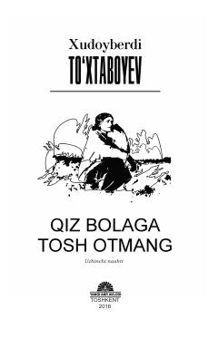

QBMustaqillik davri yoshlarining muhabbat va tadbirkorlik yo'lidagi hayotiy sarguzashtlari.
Kitobda Xudoyberdi To'xtaboyevning ikki romani — 'Qiz talashgan o'smirlar' va 'Qiz bolaga tosh otmang' — jamlangan. Asarlarda mustaqillik davrining yoshlari, fermerlik va tadbirkorlik yo'lidagi mashaqqatlar, muhabbat va hayotiy sinovlar tasvirlanadi. Tadbirkor qiz Xurshidaning o'z ishini yuritish va kengaytirish yo'lidagi kurashi asosiy mavzulardan birini tashkil etadi.